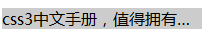

语法：

说明：
text-overflow用来设置是否使用一个省略标记（...）标示对象内容文本的溢出
注意：
text-overflow只是用来说明文字溢出时用什么方式显示，要实现溢出时产生省略号的效果，必须定义强制文本在一行内显示（white-space）及溢出为隐藏（overflow:hidden）,只有这样才能实现溢出文本显示省略号的效果
使用方法：
text-overflow:ellipsis;
overflow:hidden;
white-space:nowrap;
兼容性：
text-overflos:clip
- 浅绿 = 支持
- 红色 = 不支持
- 粉色 = 部分支持
| Values | IE | Firefox | Chrome | Safari | Opera | iOS Safari | Android Browser | Android Chrome |
|---|---|---|---|---|---|---|---|---|
| Basic Support | 6.0+ | 2.0+ | 1.0+ | 3.1+ | 15.0+ | 3.2+ | 2.1+ | 18.0+ |
text-overflos:ellipsis
- 浅绿 = 支持
- 红色 = 不支持
- 粉色 = 部分支持
| Values | IE | Firefox | Chrome | Safari | Opera | iOS Safari | Android Browser | Android Chrome |
|---|---|---|---|---|---|---|---|---|
| Basic Support | 6.0+ | 2.0-3.6 | 1.0+ | 3.1+ | 15.0+ | 3.2+ | 2.1+ | 18.0+ |
| 4.0+ |
事例：
div{
text-overflow:ellipsis;
overflow:hidden;
white-space:nowrap;
width:200px;
background:#ccc;
}
